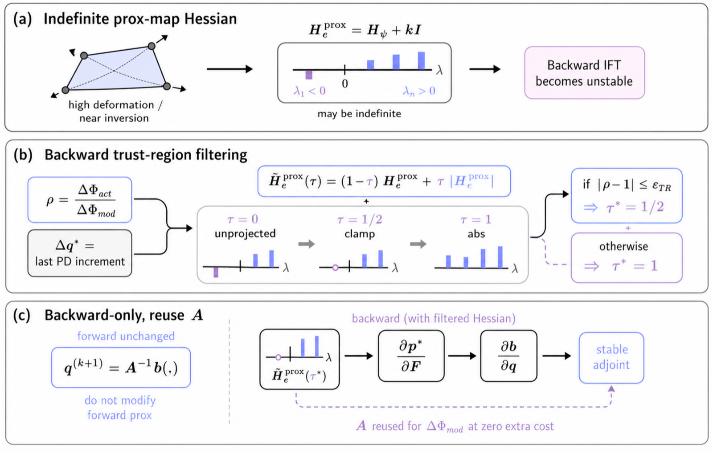
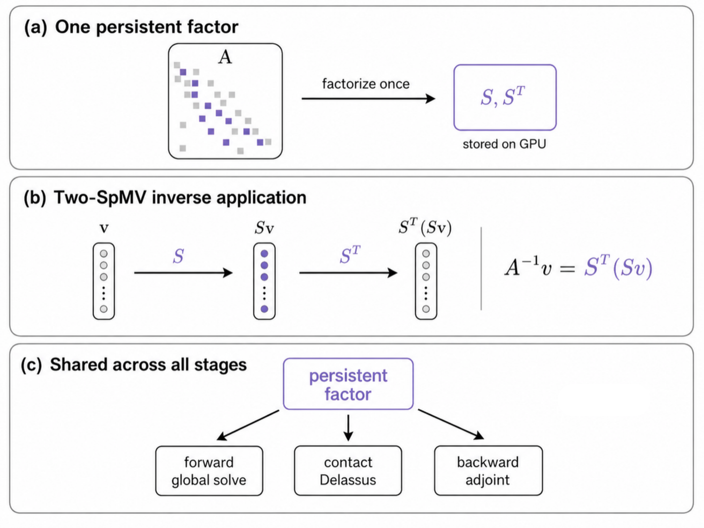

Method Overview
DiffPhD's design rests on one observation: Projective Dynamics' global stiffness matrix A is the shared backbone of every expensive operation—forward global step, Delassus contact compliance, backward adjoint—so the solver is organized around making A cheap to invert and robust under contrast. Heterogeneity is routed structurally through stiffness-aware projective weights baked directly into the global matrix; a trust-region filter is lifted onto the proximal-map Hessian in the backward pass to yield accurate Neo-Hookean gradients at high Poisson's ratios and large deformations; and a single persistent sparse-inverse factor is reused across forward, backward, and frictional-contact computations for an order-of-magnitude wall-clock improvement.



